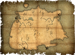

Music Escape Room
INICIO
MISIÓN

PISTAS

INICIO
MISIÓN
Esto hará que pierdas todos los progresos que has hecho. Si estás seguro pulsa aceptar, de lo contrario pulsa la tecla Escape o haz click en el botón Cancelar
Bienvenid@, has sido seleccionado entre l@s mejores investigadores para encontrar la partitura perdida del famoso compositor Ludwig van Beethoven. Nos consta que el pianista Rudolf Buchbinder ha escondido la partitura en esta mansión familiar abandonada para asegurarse de que caiga en manos de un auténtico admirador de la vida y obra del compositor.
Introduce la clave
_ _
Parece que faltan algunas notas
_ _ _
Hay una hoja en la máquina de escribir con este mensaje escrito:
Ludwig van Beethoven fue un compositor, director y pianista alemán nacido en _ _ _ _; su música es una de las más interpretadas del repertorio clásico, y es uno de los compositores más admirados en la historia de la música.
Parece que hay que escribir el nombre de una ciudad:
_ _ _ _
¡Felicidades! Has encontrado la partitura secreta de Beethoven.
Gracias a ti, el mundo podrá deleitarse con otra obra de este gran compositor.